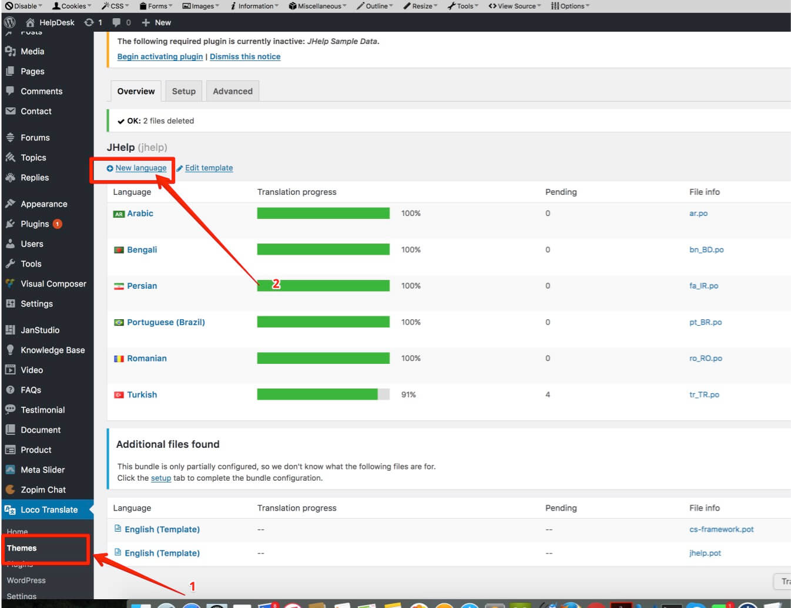

Introduction
Thank you very much for choosing our theme. We truly appreciate and really hope that you'll enjoy our theme!If you like this theme, Please support us by rating us 5 stars (How to rate?)
{kind=link}
Gecko ‐ Powerful, Profesional Responsive WooCommerce Theme for Online Fashion, Hand made, Furniture Store... It comes with a lot of great features that would take you months to develop. It is fully responsive, it looks stunning on all types of screens and devices. Including easy to set up for MailChimp, Contact Form 7, Instagram, Lookbook, WooCommerce Email Transaction and Product Colour Swatch, Product Colours Swatch Gallery Images, Product Video Thumbnail
Theme features
- Responsive Design
- Retina Ready
- Sticky Header
- Header Layout Options
- Footer Layout Option
- WooCommerce Ready
- WooCommerce Product Color Swatch
- WooCommerce Product Color Swatch Gallery Images
- WooCommerce Product Images Swatch
- WooCommerce Product Video Thumbnail
- Product Listing Color Attribute Filter
- Product Listing Brand Filter
- Product Listing Isotope Categories Filter
- Product Listing Masonry Layout with Lazy Load or Infinite Scroll
- Product Quick View
- WooCommerce Product Custom Tab
- WooCommerce email preview
- Ajax Add to Cart
- Product's Badge (New, Sale, Sold Out)
- Woocommerce Newsletter Popup integrate with MailChimp
- WooCommerce Product Cloud Zoom.
- Blog Page Layout Option
- Portfolio Page Layout Option
- Menu's Badge
- Product Ajax Search Suggestion
- FontAwesome Icons
- Multilanguage Ready
- One click to import demo.
- Visual Composer Page Builder(save $34)
- MailChimp For Wordpress
- YITH WooCommerce Newsletter Popup
- Contact Form 7
- Meta Slider
- YITH WooCommerce Wishlist
- YITH WooCommerce Ajax Product Filter
- YIKES Custom Product Tabs for WooCommerce
Credits
- Icons used in the theme: http://fortawesome.github.io/Font-Awesome/
- Mockup iPhone & iPad free include PSD: http://pixeden.com
Image Sources
- https://stocksnap.io
- https://stockphotos.io
- http://free-photos.gatag.net
- https://pixabay.com/
- Product's images: http://www.forever21.com/
- google.com
Note: All images are just used for Preview Purpose Only. They are not part of the theme and NOT included in the final purchase files.
Need Support?
If you have any questions regarding to theme issues, please submit a ticket at http://support.janstudio.netTheme Installation
Once you purchase the theme from themeforest, you'll be able to load 2 file type.{kind=link}
- All Files and documentation
- Installable Wordpress Theme File
Install theme via Wordpress Dashboard
- Go to 'Appearance > Theme' section
- Click 'Add New' and select the 'Upload' option
- Upload the zip file
- All Done :)
Install theme via FTP
- Access to the file on your server using ftp editor program
- Go to 'wp-content/themes' folder
- Extract the zip file and put the themename-vxx_xx folder there
- Go to 'Wordpress Dashboard > Appearance > Theme' section to activate the theme
- All Done :)
Install Plugins
After you install the theme, there'll be a list of suggested and recommended plugins at the top of the wordpress dashboard.If you already hide it out, you can go to 'Appearance > Install Plugins' section instead too.
Importing Demo Content
After activating the theme, there'll be suggested plugin listed at the top (if there aren't, you can go to 'Appearance > Install Plugins' section as well ). Try installing and activating these following plugins ( as it effects the importing process ). You can also install all suggested plugins at this step as well.Note:All of your old data will be remove if you use this function.
Then, go to 'JanStudio > Install Sample Data > Choose Layout > Import Demo Data'
Follow the steps mentioned on the screen, then, you'll get the site like the demo :)Can't import demo sample date
You can add below code in function.php line 2 in themes/gecko/function.php and try import again. This problem of hosting limit memory. After import complete you can remove code.
ini_set('memory_limit','128M');
Theme Translation
Try installing the 'Loco Translate' plugin. ( Can be found in 'Plugin > Add New' section ) or You can download plugin at here
- After installed plugin go to 'Loco Translate' section. And Click to "Theme > New Language"
Select your language to translate
Translate texts
You can learn more about how to localize / translate the wordpress string from here as well
Updating the theme
1. Auto Update
- You can download plugin at https://github.com/envato/envato-wordpress-toolkit/archive/master.zip– Go to Plugin > Add New > Browser to file you downloaded to install.
- Go to Dashboard > Envato toolkit > Input your Envato Username and API Keys
- To get Envato API Key you need login your Envato Account > Settings > API Keys > Generate API Key or copy exist API key

- Open tab "Themes" and Choose Look > Update Automatic
2. Manual Update
Try following this steps for this.- Download the zip file from themeforest again
- Install it to different folder ( or just simply uploading via wordpress dashboard without removing the old one)
- Activating new theme version
- Set the menu to themes location at the 'Appearance > Menu' section.
- Save the theme option once
- Make sure everything is working properly and you can remove the old theme files out
General Layout
- Content Width
- Boxed Layout
- You can use Custom CSS style if you want overwrite style of theme and your customize code keep in database so you can update theme in future without change
- You can add Google Analytics code to manager, track your website
Header Settings
1. Header Layout Options
- You can choose 1 in 7 header layout options to display on your website. With header layout 6 and header layout 7 you can upload background image
- You can enable transparent header to display header like image below
2. Logo Settings
- You should upload both regular logo for normal device and retina logo (2x) for high resolution as macbook retina, mobile devices
3. Header Top Settings
- Have options for you can customize text display on header top "Content Left" (phone number, email, socials that's help your customer easy contact with you) or you can display promotion message for your customer with header top "Content Center" html, add short code to diplay language switcher on "Content Right"
- You can config to header display switch currencies
Woocommerce Settings
1. General Setting.
You can setup page title and sub-title display on shop (all categories) page
You can enable catalog mode by enable param
2. Sub Category Setting.
With sub-category setting you can setup layout dislay as grid or mansory and number of columns
3. Product Listing Setting.
- Style: You can setup list of product display as grid or masonry, with masonry style you have option enable isotope categories filter and infinite scroll
- Flip Product Thumbnail:You can enable this param to flip your product thumbnail when hover
- Number of Column: With this option you can setup layout with 2,3,4 product per row
- Per Page: Default of Woocommerce you only can display 12 products on page with this option you can increase or reduce number of product per page
- Layout: You can setup category page with left sidebar, right sidebar or no-sidebar
- Hover Style: We define 4 options for hover style, you can easy switch on any style for you shop display
- Enable Products Attribute On Product List: You can choose available attribute of product when hover on images
4. Product Detail Setting.
- Product Detail Style: We define 3 styles layout (fixed, images thumbs slider and full with big images)
- Product Detail Layout: You can setup detail page with left sidebar, right sidebar or no-sidebar
- Miscellaneous: You can enable cloud zoom, change size guide image for all product, shipping & return text content
Blog Settings
You can setup blog page display as grid or masonry layout with left sidebar,right sidebar or no sidebar
Typography Settings
You can change font family use default fonts, google fonts, change font size, font color, heading font size
Portfolio Settings
- You can setup page title, sub-title, background for page title
- You can setup portfolio page display as 2, 3, 4 columns and number of project display per page
Homepage
- You can assign another page to homepage by go to Dashboard > Settings > Reading > Change Frontpage to any page you want
Page Title Options
1. Page Title Display

2. To display page title you have turn it on, add sub title and upload background image
Category Header Background
Go to "Products > Categories to create new Product Category and upload image as background

Category Sidebar
You can setup individual layout for category and select separate sidebar for individual category
Product Attributes
To display product attributes (colours, size) you have to create product attributes first.
1. Go "Products > Attributes" to create attribute
2. After create attribute you have to click on "Configure terms" to add attribute (example 'Size: XS | S | M | L | XL')

3. Go to WooCommerce > MG OpenSwatch Options > Swatch Attributes > Check in Color, Size,..
4. Upload thumbnail images for colours
Display product attributes on product listing page
To display product attributes on product listing page you need go to WooCommerce > MG OpenSwatch Options.
1. Show swatch on list > Yes
2. Position > After title
Category Product Ajax Attributes Filter

- We created WooCommerce Top Sidebar Widget Area to contain YITH WooCommerce Ajax Product Filter.
- YITH WooCommerce Ajax Product Filter work with product attributes you created at prev step (color, size, brand)
- To add YITH to WooCommerce Top Sidebar you go to Appearance > Widgets > YITH WooCommerce Ajax Product Filter > WooCommerce Top Sidebar

- To config color filter you go WooCommerce Top Sidebar and do like screen shot
- To config size filter you go WooCommerce Top Sidebar and do like screen shot
- To config Brand filter you go WooCommerce Top Sidebar and do like screen shot

Product's images size
There're several predefined thumbnail product's images size, catalogue product's images size and single product's image size. Which you have to set in "Woocommerce > Settings > Product tab > Display "- If you upload images before and want to regenerate thumbnail you can use Regenerate thumbnail plugin to apply your settings with thumbnail.
- After install plugin you go to "Tools > Regenerate Thumbnails"
Product Images
Upload images to display on product detail. Upload featured image as main image and gallery as thumbnail imagesProduct colour and size swatch
After create attributes you can display atrribute on product "Quick View" and Product detail page
1. Create new product and set Product Data "Variable Product".
2. Enable Color Swatch.
3. Add attribute for this product.
Remember tick on all checkbox
- Visible on the product page
- Used for variations
4. Set image and assign with atttribute color.
Choose color and any size and upload thumb as color
5. Set default colour and size for product.
After set image thumbnail as color and size for product you should set default colour and size to display for product.6. Display colors swatch gallery for images
If you want display more than one images as color you should upload images for gallery colors as screen shot
7. Display images swatch
If you want display images swatch Choose "Open Swatch" tab and upload images as color like screen shot
Product Custom Tab
Woocommerce default you have only 3 tabs (description, additional information, reviews) you should install YIKES Custom Product Tabs for WooCommerce plugin to add more custom tab
On the front-end display
Product Detail Layout
We have option for you can config product detail layout in theme option WooCommerce Setting and product detail section, you also can set layout for product detail when you create new product
Product Video Thumbnail
We have option for you can display video as thumbnail, you can upload your video (.mp4) from local or use Youtube, Vimeo link
Product New Arrival Badge
You can add "New Arrival" badge for product by set number of days after product publish
Email Transaction Customize and Preview
To customize you transaction email of Woocommerce go to 'Woocommerce > Settings > Email'You can "Preview Email Templates" in menu 'Woocommerce > Settings > Email > Email Options'
MailChimp Newsletter
1. You need to download install MailChimp Newsletter plugin
2. Get MailChimp API key
3. Edit form
4. Display Subscribes Form
- Create a widget and display this widget at Footer Sidebar: Go 'Appearance > Widgets > Text Widget' and add to 'Footer Sidebar'Meta Slider
1. You need to download install Meta Slider plugin
To create your first slider go 'Meta Slider > Meta Slider'2. We're using free edition of Meta Slider so you want style text on slider you only have method: put custom HTML into caption box
mega summer sale
Big discount up to 50%
Start shopping
3. Choose kind of slider to display
- Flex Slider
- R.Slider
- Nivo Slider
- Coin Slider
Socials Settings
You can setting up your social channel at 'JanStudio > Theme Options > Social Networks.